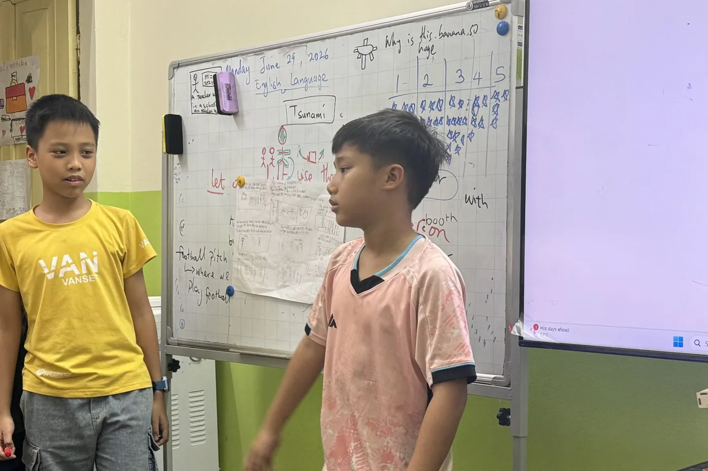

Who is Jupiter for?
Jupiter is an ELA (English Language Arts) class for Grade 3–4 students with advanced English. It's a particularly good fit if your child:
- Can read short stories in English and write complete sentences.
- Finds school English, or a conversation class, too easy.
- Loves reading, asking “why?”, debating and sharing ideas.
- Wants a challenge, and a strong base for Cambridge exams, academic competitions and the Grade 6 entrance tests.
How is an ELA class different from a regular English class?
Most English classes teach children about English: word lists, grammar rules, sentence patterns. An ELA class teaches them to use English to understand, think and explain.
| Regular English class | Jupiter ELA class |
|---|---|
| Memorize the unit's word list | Meet words in stories and science texts, then reuse them in speaking and writing |
| Grammar gap-fill exercises | Grammar learned to write better, corrected on the child's own work |
| Single sentences | 8–10 sentence paragraphs in different genres |
| Repeat model dialogues | Discussion, debate and presentations with evidence |
Why does this work better? See the seven research findings in What is ELA? ELA vs ESL.
What will my child learn in Jupiter?
Every lesson covers the four strands of the Common Core ELA standards, pitched for high-achieving Grade 3–4 students:
Reading
Stories and science or social studies texts: main idea, key details, comparing characters and drawing conclusions with evidence from the text.
Writing
Narrative, explanatory and opinion paragraphs: plan, draft, self-edit against a checklist, then publish.
Speaking & Listening
Group discussion, debate, 2-minute poster presentations; listening closely to ask questions and respond.
Language
Grammar, spelling and academic vocabulary — learned in the context of reading and practiced in the child's own writing.
Textbook: National Geographic Reach Higher
Reach Higher from National Geographic Learning is a six-level primary program built to bring English learners up to grade-level texts. Each unit combines original fiction with National Geographic science and social studies content, developing vocabulary, reading, writing and speaking for academic English. Its authors include Professor Nonie K. Lesaux (Harvard University) and Dr. Deborah J. Short, co-developer of the SIOP teaching model.
At HEC, Reach Higher is the backbone of the class; the teacher adds readings, projects and writing tasks to match the Common Core ELA standards for Grades 3–4.
Measurable goals
You always know where your child stands, thanks to specific criteria checked throughout the course:
- Reading: 120–150 words per minute with 90%+ accuracy; answering inference questions with evidence.
- Writing: 8–10 sentence paragraphs with a topic sentence, supporting details and a conclusion, in three genres.
- Speaking: a clearly structured 2-minute poster presentation, with answers to questions from classmates and the teacher.
- Qualifications: a pathway through the Cambridge English levels, toward A2 Flyers and then A2 Key (KET).
What does an 8-week course look like?
- Launch: a KWL chart (Know – Want to know – Learned) and a short reading to form groups.
- Weeks 1–2: asking questions, note-taking while reading, a first draft.
- Weeks 3–4: synthesizing notes, revising with a checklist, designing visuals.
- Weeks 5–6: rehearsing presentations; peer feedback and self-assessment.
- Weeks 7–8: a gallery walk of finished work, reflection and new goals. Next step: SKY 1 for Grades 5–6.
Who teaches your child?
Victor Moronu teaches every session. He was educated in the USA and holds a teaching degree and a New Jersey (USA) teaching certificate — an engineer turned teacher — and teaches to the US InTASC professional standards for teachers.
Every class also has a Vietnamese teaching assistant with a degree in English or education, who supports small-group discussion, checks writing and helps children understand demanding tasks. Research from the Education Endowment Foundation (UK) found that oral language work led by trained teaching assistants is about as effective as teacher-led work — so in Jupiter, several groups talk and get feedback at the same time.
See a real lesson: Grade 4 students debate
An ordinary, unscripted lesson: Grade 4 students take a position, listen to the other side and answer back, entirely in English.
Admission in 3 steps
- A free placement test to establish your child's current level.
- A minimum Cambridge English level — the test confirms your child has reached the class's entry level.
- A short interview with Victor, or a recommendation from your child's current teacher.
Classes stay at 12 students or fewer, so the teacher reads and responds to every piece of writing and every talk.
Standards and credentials
- Common Core ELA standards (USA)
- Cambridge English levels
- CEFR framework (matching the Cambridge levels)
- New Jersey–certified teacher
- Licensed by the Hanoi Department of Education and Training
FAQ
Who is the Jupiter class for?
Grade 3–4 students whose English is already strong — they can read short stories and write complete sentences — who find their current program too easy and want a challenge: longer texts, reasoned paragraphs, discussion and presentations in English.
My child is in Grade 3 but their English isn't strong yet. Can they join Jupiter?
Your child takes a free placement test. If they haven't reached the minimum Cambridge level yet, HEC places them in the right foundation class, such as Venus or Neptune, to prepare for Jupiter rather than struggling in a class that is too hard.
Does Jupiter help with Cambridge exams?
Yes. The class follows Cambridge English levels, and the ELA skills it builds — reading comprehension, paragraph writing, speaking with reasons — are what A2 Flyers and A2 Key (KET) score. The teacher advises each child on when to sit an exam.
Who teaches Jupiter?
Victor Moronu — educated in the USA, with a teaching degree and a New Jersey (USA) teaching certificate — teaches every session, with a Vietnamese teaching assistant who holds a degree in English or education.
What are Jupiter's schedule and fees?
Tuesdays and Thursdays, 19:30–21:00. 210,000 VND per 90-minute session, about 1,680,000–1,890,000 VND a month, billed only for sessions held, with a 5% sibling discount and currently no book fee.